CAMON 30 SeriesLOEWE. Design Edition
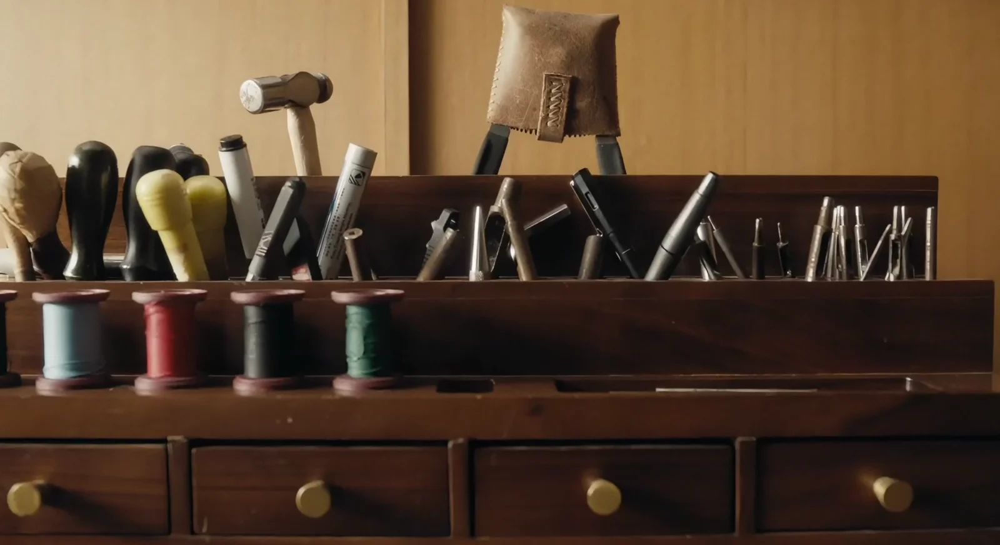
CAMON 30 × Loewe Design
合作契机与设计目标
延续艺术表达，塑造随身的时尚单品
通过年度 IP 合作，进一步拓展品牌的艺术表达。作为 CAMON 30 基础配色之外的特别版本，
在延续同代ID语言的基础上，赋予产品更鲜明的时尚气质与独立单品感。
我们延续皮革、金属拼接与渐变色的组合，探索材质、色彩与整体形态的协调关系，并让IP版本保有 CAMON 30 整个档位的识别度，同时形成独特的风格表达与传播记忆点。
LOEWE. Design Edition
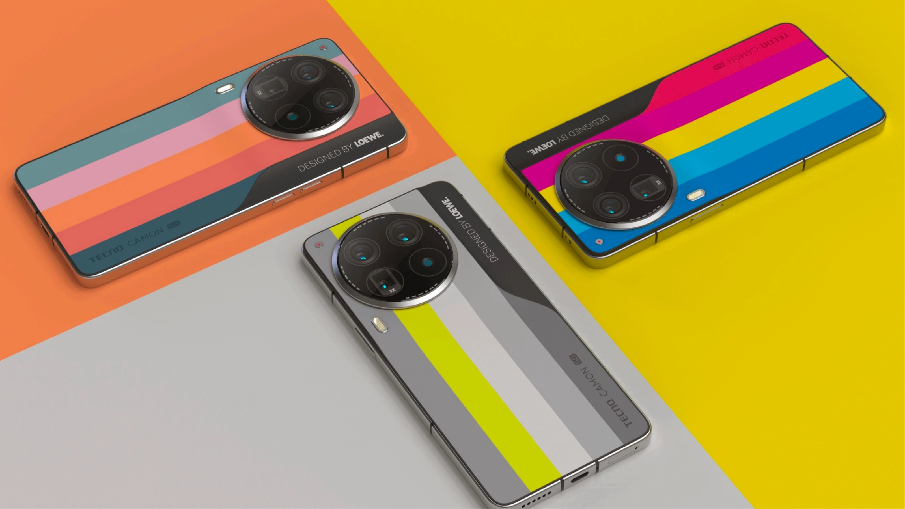
The initial concept was proposed by the LOEWE. design team.
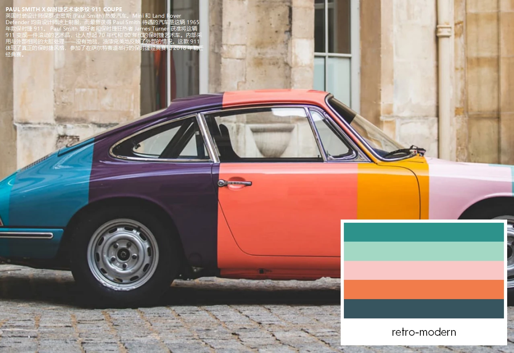
Three team workshops.
Refining the concept.
多色拼接视觉不仅能够强化时尚的单品的设计目标，且更契合皮纹的量产性
EVOLVING DESIGN
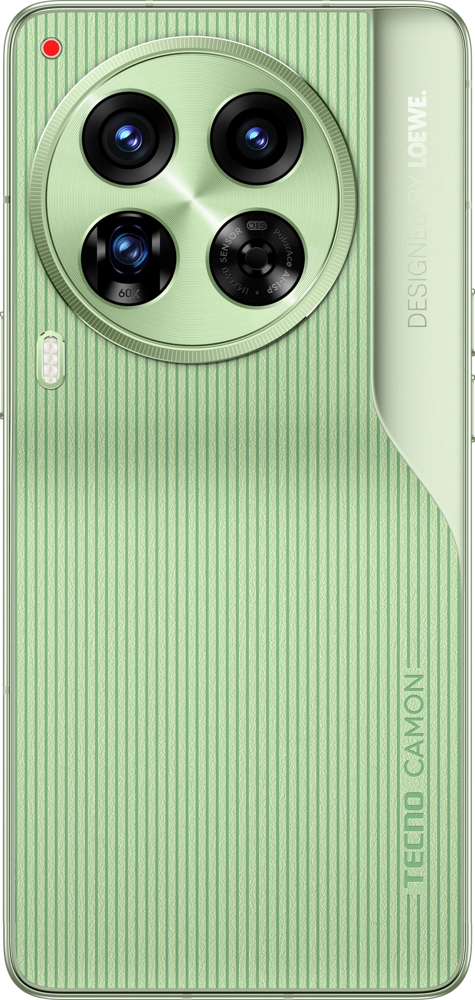
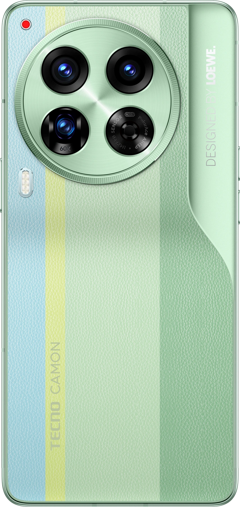
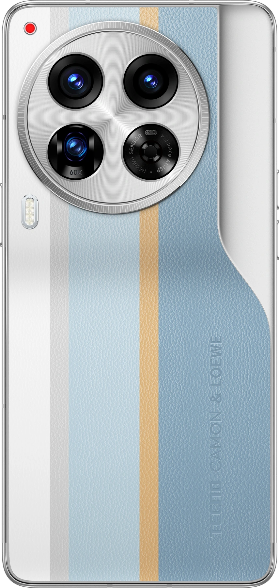
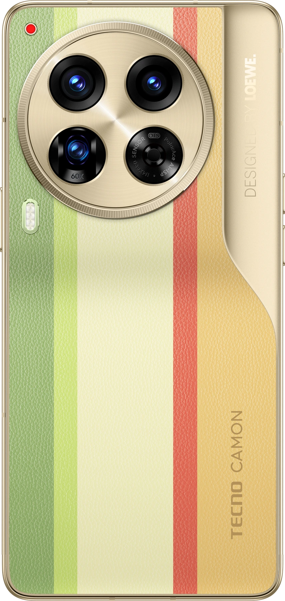
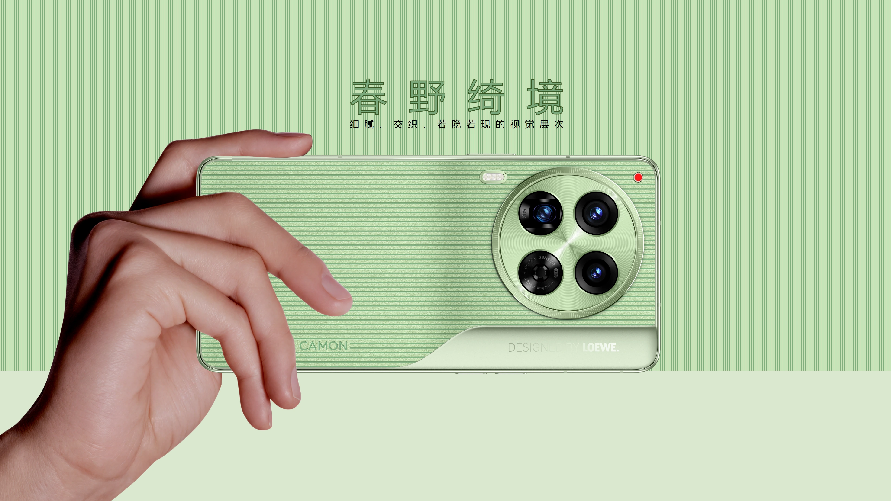
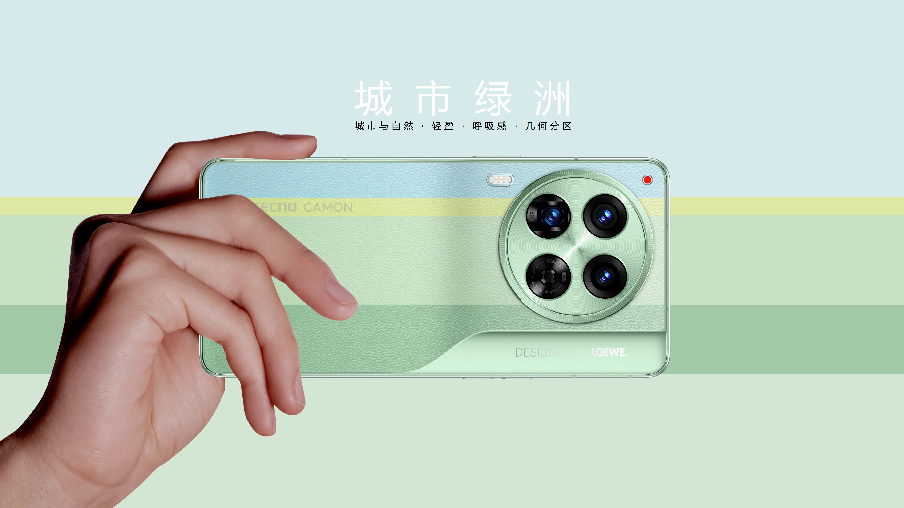
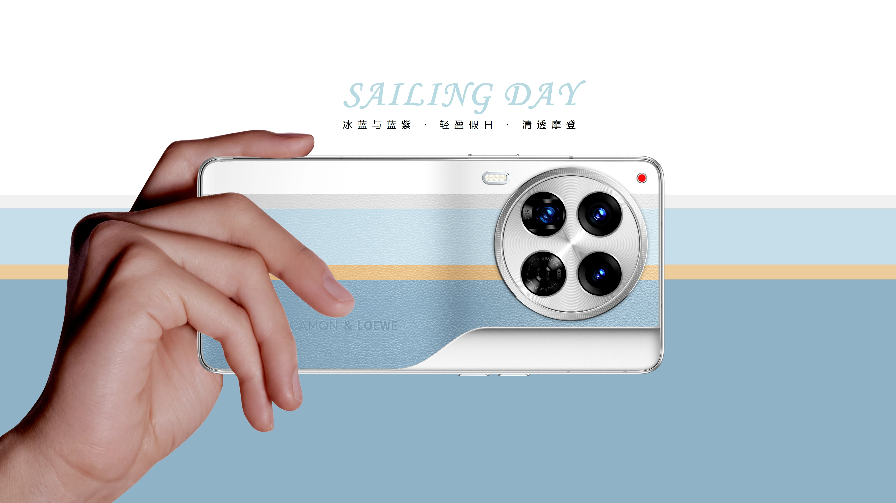
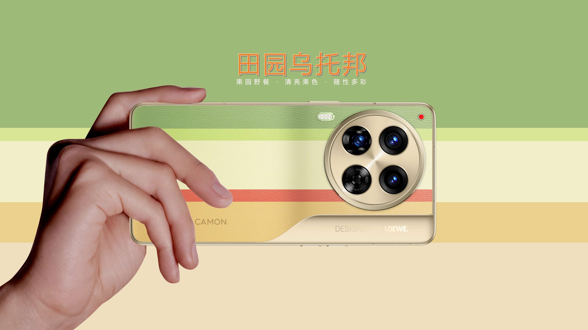
Final Design Reveal
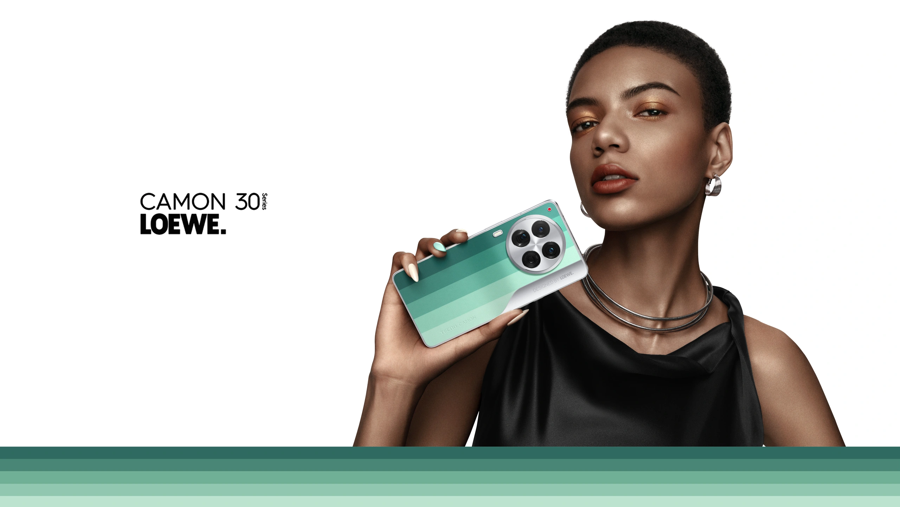
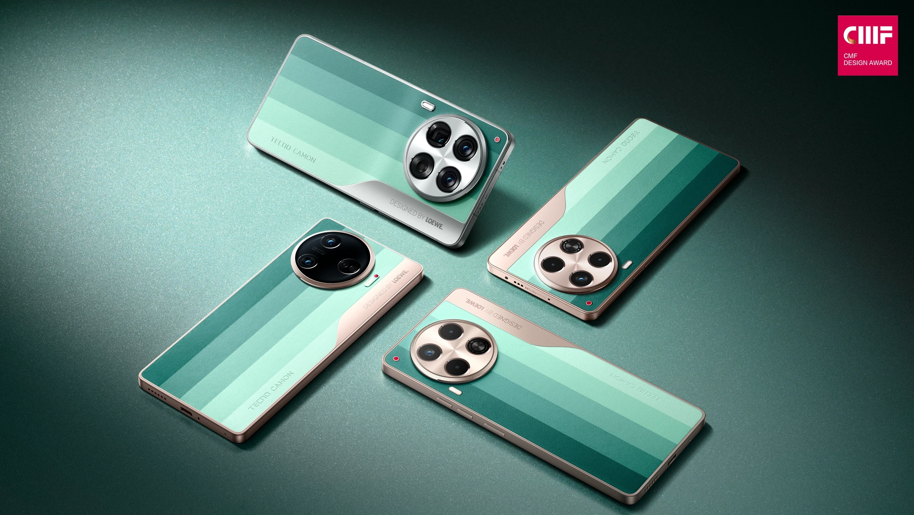
事实上，本次 IP 合作的价值体现在双方如何把各自的设计理解，逐步转化为一款完整的产品。从最初的多色拼接构想到最终的绿色阶梯渐变，过程中反复推敲色彩、皮革与金属之间的关系，包括协调不同档位的匹配度
TEAM
- DONGMEI | HE
- SHUAI | YANG
- HUASEN | YANG
- JIAHUI | TAN
- BING | WANG
CAMON X LOEWE.